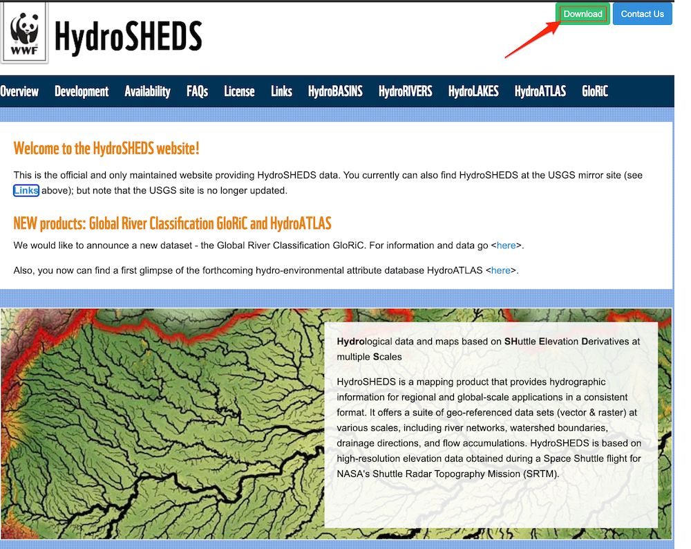
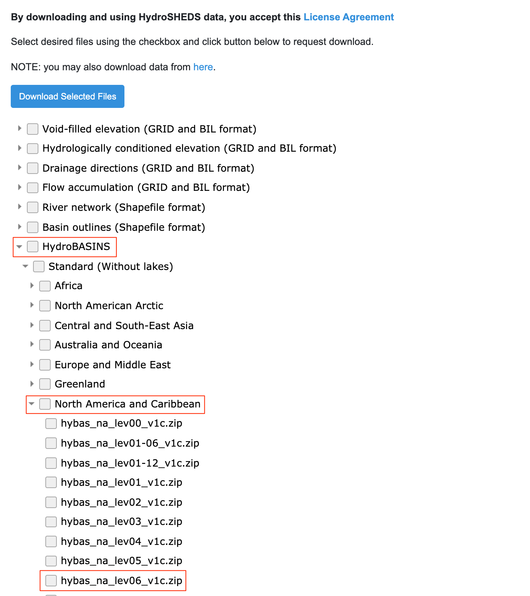
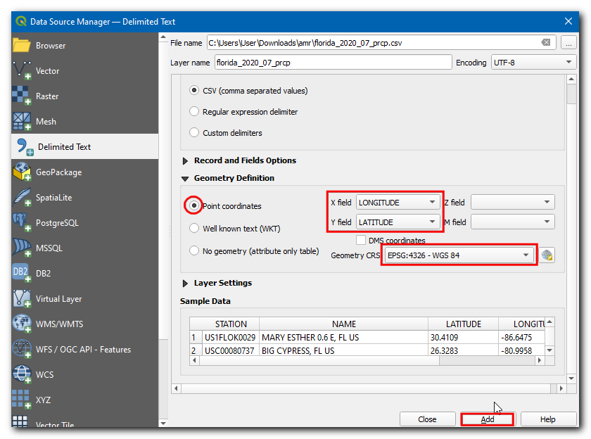
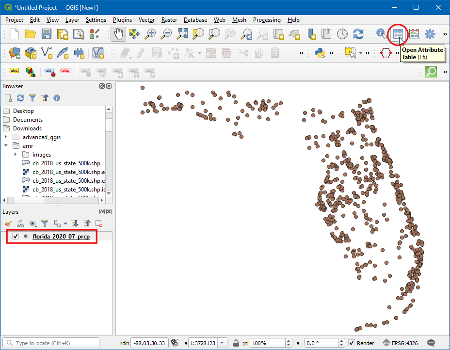
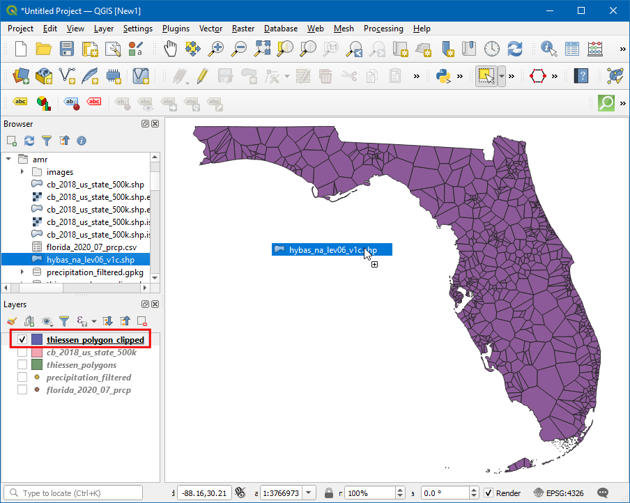
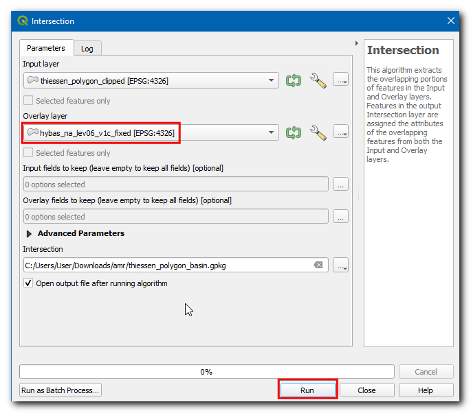

Ujaval Gandhi
Ujaval GandhiIzračunavanje srednje površinske količine padavina (QGIS3)¶
Izračunavanje vodnog bilansa, modeliranje poplava, prognoziranje oticanja, klimatske studije itd. često zahtevaju prosečnu dubinu padavina u hidrološkom slivu kao ulazni podatak - što se naziva i površinske padavine ili površinske srednje padavine (AMR).
Proračun AMR-a može se izvršiti korišćenjem podataka sa kišomera. Koristeći lokaciju kišomera i posmatrane padavine, može se proceniti prosečna količina padavina na datoj lokaciji korišćenjem bilo koje od sledećih tehnika:
Aritmetički prosek: Može se jednostavno uzeti prosek svih posmatranih vrednosti. Ova metoda pretpostavlja da je polje padavina homogeno i da su posmatranja kišomera nezavisna i daju jednaku težinu svim kišomerama.
Tisenov poligon: Ova metoda deli područje pomoću Tisenovih poligona uz pretpostavku da su padavine homogene unutar područja pokrivenosti svake stanice. Ova metoda se naziva i prosek ponderisan po površini. Ove pretpostavke su dobre za nizinski ili ravni teren, ali nisu pogodne za planinski teren.
Izohijetalna metoda: Ova tehnika interpolacije izračunava izohijete - linije koje spajaju jednake padavine. Pretpostavlja se da su padavine između 2 izohijete homogene. Ova metoda je pogodna kada je mreža kišomera gusta.
Ponderisanje rastojanja/mrežno određivanje - Ovo je tehnika interpolacije gde se kreira rasterska mreža i vrednost za svaki piksel se procenjuje na osnovu udaljenosti do stanica. Kada se sve tačke mreže procene, one se sabiraju i zbir se deli sa brojem ćelija mreže da bi se dobila srednja površinska količina padavina.
Geostatističke metode: Na padavine snažno utiču lokalni faktori - kao što je nadmorska visina. Korišćenjem multivarijantne regresije ili Kriging tehnika, može se uzeti u obzir prostorna autokorelacija i postići bolja tačnost. Ove metode su pogodne kada je raspodela kišomerne stanice ravnomerna i gusta.
U ovom tutorijalu, naučićemo QGIS tok rada za izračunavanje srednje površinske količine padavina koristeći metodu Tisenovog poligona.
Pregled zadatka¶
U ovom tutorijalu, uzećemo padavine koje su izmerile stanice Globalne istorijske klimatološke mreže (GHCN) i izračunati prosečnu površinsku količinu padavina u svakom hidrološkom basenu u državi Florida.
Druge veštine koje ćete naučiti¶
Kako ukloniti podatke sa Null vrednostima.
Kako popraviti nevažeće geometrije u sloju.
Kako proveriti istoriju obrade i ponovo pokrenuti alat sa istim parametrima.
Kako rastvoriti poligone i sumirati statistiku.
Kako koristiti samo odabrane funkcije u algoritmima obrade.
Dobijte podatke¶
Koristićemo slojeve podataka NOAA Climate data , HydroSHEDS i US Census Bureau Cartographic Boundary .
Padavine po stanici¶
Idite na veb-sajt „NOAA Climate data <https://www.ncdc.noaa.gov/cdo-web/>“. Kliknite na alatku za pretragu.

Izaberite „Globalni rezime meseca“ u :guilabel:„Izaberite tip/skup podataka o posmatranju vremena“, zatim u :guilabel:„Izaberite raspon datuma“ izaberite jul 2020, u :guilabel:„Pretraži“ izaberite „Države“, u :guilabel:„Unesite termin za pretragu“ unesite „Florida“. Kliknite na :guilabel:„Pretraži“.

Kliknite na Dodaj u korpu, u artiklima kliknite na Pogledaj artikle.

Pređite na Prilagođeni globalni rezime meseca CSV, kliknite na Nastavi.

Proverite Geografske lokacije i u Izaberite tipove podataka za prilagođeni izlaz proširite
PadavineizaberitePadavine (PRCP). Kliknite na Nastavi.

Unesite adresu e-pošte i kliknite na PODNESI PORUDŽBINU da biste preuzeli podatke.

Hidrološki baseni¶
Idite na veb-sajt HydroSHEDS <https://www.hydrosheds.org/> i kliknite na Preuzmi.

Izaberite

Unesite adresu e-pošte i kliknite na Pošalji zahtev da biste preuzeli podatke.

Državne granice¶
Posetite stranicu „Kartografske granične datoteke - Shapefile <https://www.census.gov/geographies/mapping-files/time-series/geo/carto-boundary-file.html>“. Preuzmite datoteku „cb_2018_us_state_500k.zip“ iz odeljka Države.
Radi lakšeg snalaženja, možete direktno preuzeti kopiju svih skupova podataka sa donjih linkova:
Izvori podataka: [GHCN], [HYDROSHEDS], [USCENSUS]
Procedura¶
Otvorite QGIS i kliknite na Otvori menadžer izvora podataka.

U dijaloškom okviru Data Source Manager - Menadžer izvora podataka, prebacite se na Delimited Text - Razgraničeni tekst. Kliknite na
…u File name - Ime datoteke, a zatim pregledajte i izaberite datotekuflorida_2020_07_prcp.csv.

Sada, pod Definicija geometrije izaberite Koordinate tačke, X polje i Y polje treba da budu Geografska dužina i Geografska širina respektivno. Izaberite Geometrijska koordinatna sistema kao EPSG 4326 - WGS 84. Kliknite na Dodaj.

Sada će biti dodat novi sloj tačaka, kliknite na ikonu Otvori tabelu atributa.

U tabeli atributa, polje PRCP predstavlja količinu padavina na stanici tokom jula 2020. Takođe, ovi podaci su zabeleženi u inčima. Imajte na umu da postoji nekoliko
Nullvrednosti koje mogu izazvati probleme tokom izračunavanja. Sortirajte kolonu PRCP i videćete da je samo mali deo skupa podataka Null. Sada ćemo ukloniti stanice sa Null vrednostima.

Otvorite Kutiju sa alatkama za obradu tako što ćete otići na i potražiti i pronaći algoritam .

U dijaloškom okviru Izdvoji po atributu, izaberite Unesi sloj kao
florida_2020_07_prcp, zatim izaberitePRCPu Atribut selekcije, panije nullu Operator. Kliknite na…pored Izdvojeno (atribut), izaberite Sačuvaj u datoteku…, unesite naziv sloja kaoprecipitation_filtered.gpkgi kliknite na Pokreni.

Sada je novi sloj dodat na platno, isključite stariji sloj i možete videti da su stanice sa Null vrednostima uklonjene.

Sada ćemo generisati Tisenove poligone iz ovog sloja. Otvorite kutiju sa alatkama za obradu tako što ćete otići na i potražiti i pronaći algoritam .

Белешка
Tisenovi poligoni predstavljaju područje uticaja oko svake tačke. Svaki poligon definiše područje koje je bliže određenoj stanici nego bilo kojoj drugoj stanici. To znači da se pretpostavlja da su padavine u bilo kojoj tački iste kao i na najbližoj stanici.
Izaberite
precipitation_filteredkao Ulazni sloj. Pošto nemamo podatke ni za jednu stanicu za merenje kiše van granica sliva, možemo dodati malo zaštitnog područja. Unesite15kao Zaštitni region (% od obima). Kliknite na…u Voronojevi poligoni i izaberite Sačuvaj u datoteku…, zatim unesite ime kaothiessen_polygons.gpkg. Kliknite na Pokreni.

Novi sloj „thiessen_polygons“ biće dodat na platno. Hajde da iseckamo ovaj sloj na granicu države. Potražite datoteku „cb_2018_us_state_500k.shp“ u Browser i prevucite je na platno.

Sloj stanja je u drugom CRS-u od Project CRS-a. Dobićete prompt sa različitim opcijama za transformaciju ovog CRS-a u Project CRS. U dijaloškom okviru Izbor transformacije možete izabrati podrazumevanu transformaciju i kliknuti na U redu.

Sada ćemo iseći sloj „Tisenovi poligoni“ na granicu države Floride. Kliknite na ikonu Izaberite obeležje po oblasti ili jednim klikom i kliknite preko države Floride.

Otvorite Kutiju sa alatkama za obradu tako što ćete otići na i potražiti i pronaći algoritam .

U dijaloškom okviru Clip, izaberite Input layer kao
thiessen_polygons, u Overlay layer izaberitecb_2018_us_state_500K layeri označite polje Samo selected features, zatim kliknite na…u Clipped i izaberite Save to File… , pa unesite ime kaothiessen_polygons_clipped.gpkg. Kliknite na Run.

Sloj odsečenih Tisenovih poligona
thiessen_polygons_clippedbiće dodat na platno. Isključite vidljivost svih ostalih slojeva. Pošto je naš zadatak da izračunamo prosečnu količinu padavina nad svakim slivom, sada ćemo učitati poligone koji predstavljaju slivove. Pronađite slojhybas_na_lev06_v1c.shpiz Pregledača i dodajte ga na platno.

Primetićete da je svaki basen pokriven mnogim Tisenovim poligonima i da svaki poligon obuhvata više basena. Da biste ovo vizuelizovali, kliknite na ikonu Otvori panel za stilizovanje slojeva i promenite Neprozirnost na
75%. Sada ćemo preseći oba sloja da bismo isekli Tisenove poligone do granice svakog basena.

Otvorite Kutiju sa alatkama za obradu tako što ćete otići na i potražiti i pronaći algoritam .
U dijaloškom okviru Presek, izaberite Ulazni sloj kao
thiessen_polygons_clippedi Sloj preklapanja kaohybas_na_lev06_v1c, zatim kliknite na…u Presek i izaberite Sačuvaj u datoteku…, pa unesite ime kaothiessen_polygons_basin.gpkg. Kliknite na Pokreni.

Izvršavanje će biti neuspešno sa porukom o grešci ima nevažeću geometriju. Molimo vas da popravite geometriju ili promenite podešavanje obrade na opciju „Ignoriši nevažeće ulazne karakteristike“.. Više o ovoj grešci možete saznati u tutorijalu Rukovanje nevažećim geometrijama (QGIS3).
Da biste popravili geometrije, otvorite Kutiju sa alatkama za obradu tako što ćete otići na i potražiti i pronaći algoritam .

U dijaloškom okviru Fix Geometries izaberite Input layer kao
hybas_na_lev06_v1ci kliknite na…na Fixed geometries i izaberite Save to File…, unesite ime datoteke kaohybas_na_lev06_v1c_fixed.gpkgi kliknite na Run.

Sada će novi sloj biti dodat na platno. Sada možemo ponovo pokušati presek. Umesto pokretanja alata od nule i popunjavanja svih parametara, možemo preuzeti unapred popunjeni dijalog iz Istorije obrade i izmeniti samo sloj Preklapanje. Kliknite na .

Dvaput kliknite na algoritam native:intersection sa liste.

Promenite Overlay layer na
hybas_na_lev06_v1c_fixedi kliknite na Run.

Sada će se učitati novi sloj i možete videti da je „thiessen_polygons_basin“ isečen na osnovu granice basena.

Sada, hajde da izračunamo prosečnu vrednost padavina iz Tisenovih poligona za svaki sliv. To se radi pomoću alatke Agregiranje koja nam omogućava da rastvorimo pojedinačne poligone dok izračunavamo statistiku na vrednostima atributa. Sada, otvorite Kutiju sa alatkama za obradu tako što ćete otići na i potražiti i pronaći algoritam .

U dijaloškom okviru Aggregate izaberite Input layer kao
thiessen_polygons_basin, izaberite sva polja osimPRCPiHYBAS_IDi kliknite na Delete selected field.

U Grupiši po izrazu izaberite
HYBAS_ID. To znači da će alat rastvoriti sve poligone koji imaju istu vrednostHYBAS_ID. U našem slučaju, to će biti svi Tisenovi poligoni koji spadaju u sliv. U odeljku Agregati možemo konfigurisati kako će se različite vrednosti polja agregirati iz svih poligona koji se rastvoruju. Za PRCP, kliknite na dugme ekspresija da biste uneli donji izraz. Izraz izračunava razlomak ponderisan površinom za svaki poligon. Postavite Agregatna funkcija nasum, što će sabrati sve razlomke ponderisane površinom, što rezultira srednjom vrednošću ponderisanom površinom. Za HYBAS_ID, promenite Agregatna funkcija naprva_vrednost. Pošto grupišemo sve Tisenove poligone prema njihovom HYBAS_ID-u, sve vrednosti će biti iste i funkcija first_value će koristiti vrednost atributa iz prvog poligona u svakom slivu. Kliknite na…na Aggregated i izaberite Save to File…, unesite ime datoteke kaoareal_mean_rainfall.gpkgi kliknite na Run.
(PRCP * $area) / sum($area)
Novi sloj će biti dodat na platno, otvorimo tabelu atributa da bismo je istražili. Kliknite na ikonu Otvori tabelu atributa.

Polje PRCP sadrži srednju površinsku količinu padavina za svaki sliv u inčima.

If you want to give feedback or share your experience with this tutorial, please comment below. (requires GitHub account)